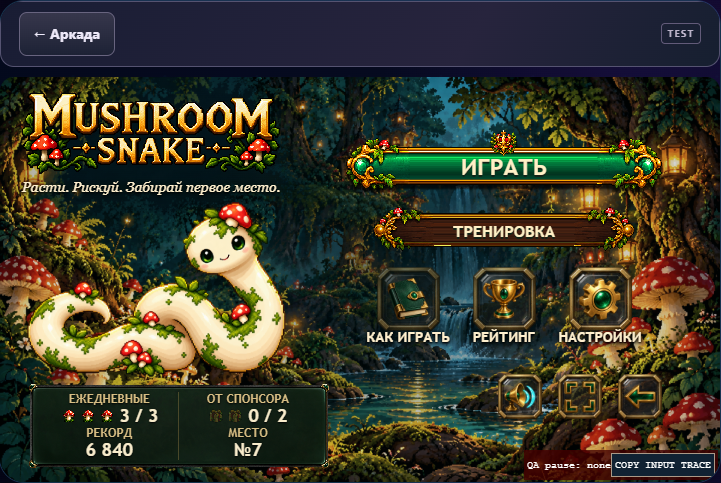
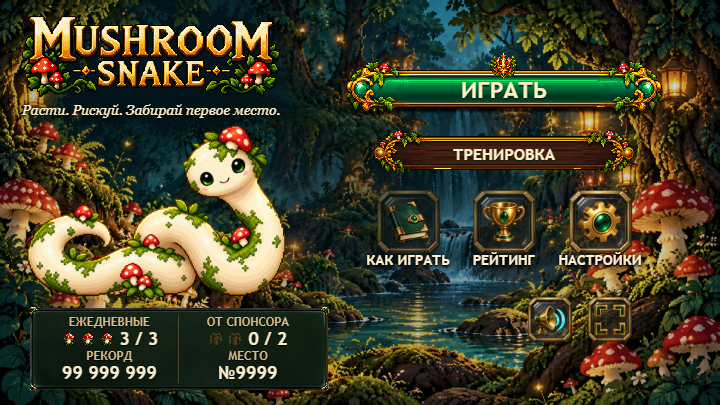
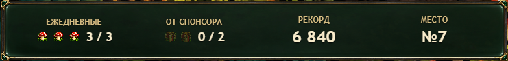
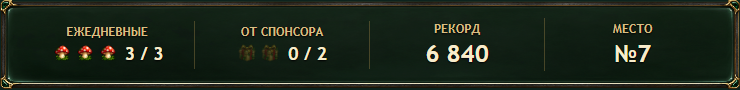
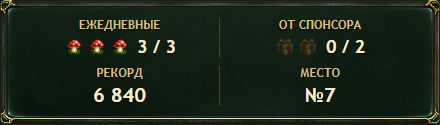
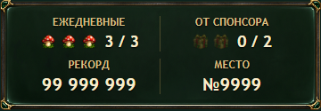

Mushroom Snake · Premium V5.3.1
TEST only. Физическое Android/Yandex подтверждение ещё требуется. Эмуляция не доказывает исправление на телефоне.
Кандидат 2.15.33-c77364482deb · runtime snake-next-3efbc8cbe51b. Статус публичного совпадения: Pages/S3; LIVE QA.
Одна панель, реальные размеры

Реальный Tilda host / cabinet 720 px. Новая панель: две строки; прежних медальонов нет.
99 999 999 / №9999 без выхода из ячеек. Нативный CSS-масштаб.
Широкий fullscreen: четыре intrinsic блока.Три концепта до интеграции



Происхождение отдельного nine-slice арта